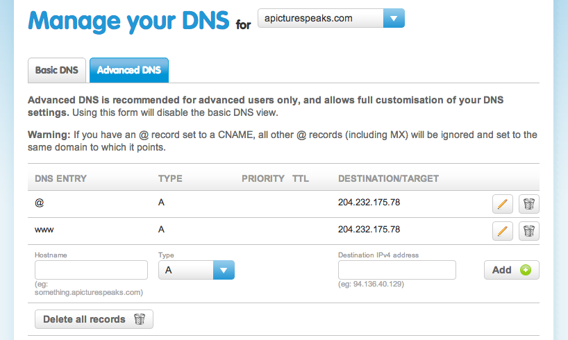

If you are using a mac, open Terminal.app. If you are on windows, as part of the package you downloaded from RailsInstaller you should now have a program called gitbash. Open that!
These terminals are a way to interact with your computer programmatically. If you are doing any software development you will need to get to grips with using the terminal, as many of the programmes you will use will be run from the terminal, instead of by clicking an icon.
The first thing you will need to get used to is moving around. Start by printing the name of the directory you are in:
$ pwdThen have a look at what’s in that directory ( list the contents):
$ lsTo move up a directory ( change directory ) do
$ cd ..To move back do
$ cd name_of_the_directoryYour commandline will help you: tab can often be used to auto-complete names of files, the up arrow can be used to cycle through previous commands that you have typed.
You should navigate to your coding_course folder that you created last week, using cd. When you get there create a new directory (_make directory_) for your site:
$ mkdir first_siteNote: choosing names without spaces makes command line navigation easier.
Git is a version control system. It allows you to keep the entire history of your code, and makes it easy to share and collaborate with others.
We will enable our new folder to work with git:
$ git initTo see what this has done do:
$ ls -aThe -a is a flag which tells the ls command to show hidden files and folders. You should see a folder called .git in the results. Move into this folder, and have a look around:
$ cd .git
$ lsAll the data to allow git to version control your code will be stored inside this hidden folder. If you ever want to ‘un-version-control’ your code all you have to do is delete this folder.
Apart from this hidden git folder, the first_site folder currently empty. We’ll add the html file you created last week:
$ mv ../first_html_page.html .mv is for move. The line above assumes that your homework is stored in the directory above - just like cd .. moves up a directory, .. is used to specify the directory above in a file path. The . refers to the current directory and tells mv where to move the file to.
To see what git thinks about this do
$ git statusIt should tell you that you have an ‘untracked file’.
We’ll now add this file to the git repository:
$ git add .
$ git commit -m "Imported first_html_page"Adding to a git repo is a two stage process, but most of the time we will perform these two steps together. The add . tells git to add everything in the current folder (. = current folder, just like in mv) into the local index. The git commit adds everything in the local index into the repository.
You can see your commit by doing
$ git logor you can get a nice diagram showing your repo by doing
$ gitk --allLast week we looked at HTML, and saw how this was used to mark up the information in a webpage. Right now, your HTML pages don’t look very good, as you haven’t given any styling information. The way to do this is using CSS (Cascading Style Sheets).
There are a few ways to include CSS in an HTML file: the proper way is to link to a separate .css file in the <head>. This allows web browsers to download the .css file once for the entire site, which speeds up loading times. You can also put the css inline, or write it directly into the <head>. For simplicity we’ll do this:
Make your html header look like this:
<head>
<title>Some title</title>
<style>
h1 { color: red; }
</style>
</head>The bit inside the <style> tags is CSS. The h1 bit specifies the tag that will be styled. The bit inside the { ... } specifies the styles that will be applied. Here we change the colour of the h1 text red.
If you save the changes to the html file, then open (or refresh) the page in your browser you should see the changes. By opening the developer tools, and hovering over the h1 you should be able to see your css rule at the side.
Try out the following:
p { color: blue; }
div { background-color: pink; }
div#lists { background-color: green; }The div#lists bit selects only the div with the lists id: <div id="lists">.
If anything, these changes will have made your site look a lot worse - but I hope you get the idea!
Now go back to the command line, commit these changes, and have a look at the repo:
$ git add .
$ git commit -m "Added some css"
$ gitk --allGithub is a site which will host a git repo online for you, making it easy to collaborate with others. We’ll now put the first website online.
Go to github, login, and click “Create New Repo” in the top left hand corner. Follow the instructions, calling it something like first_site. You’ll get to a page when it’ll describe how to get your code online. You want to follow the instructions for “Pushing an existing repository to github”. It’s probably best to use the http option, instead of ssh. You should end up doing something like:
$ git remote add origin https://github.com/yourusername/first_site.git
$ git push -u origin masterYou should now be prompted to add your github username and password. If all goes well, when you go to github you should see the first_site folder containing your html file.
Github will host an html site for free for you, through a service called github pages. There are two possibilities for telling github to make your code into a website:
yourusername.github.comgh-pagesWe’ll do the second, even though you don’t know what branches are. So for the moment, some of this won’t make much sense - hopefully it will at some point in the future!
To do the gh-pages approach first open the file first_site/.git/config in your code editor. This might be tricky, as it is a hidden folder and might not show up in the list when you do File > Open. To find out how to do this google “windows show hidden files” or similar.
It should look something like this:
[core]
repositoryformatversion = 0
filemode = true
bare = false
logallrefupdates = true
ignorecase = true
precomposeunicode = false
[remote "origin"]
url = https://github.com/TomClose/first_site.git
fetch = +refs/heads/*:refs/remotes/origin/*
[branch "master"]
remote = origin
merge = refs/heads/masterYou want to change it so that it looks like this:
[core]
repositoryformatversion = 0
filemode = true
bare = false
logallrefupdates = true
ignorecase = true
precomposeunicode = false
[remote "origin"]
url = https://github.com/TomClose/first_site.git
fetch = +refs/heads/*:refs/remotes/origin/*
push = +refs/heads/master:refs/heads/gh-pages
push = +refs/heads/master:refs/heads/master
[branch "master"]
remote = origin
merge = refs/heads/masterand then save the file. Don’t worry about what this means right now.
If you then do
$ git pushit should say that it pushed both to origin/master and origin/gh-pages. After waiting a few minutes for github to get ready, you should be able to see your site at yourusername.github.com/first_site.
There are two things you need to do to get your domain name working with your github pages site
The second bit is easy:
Open your code editor, and create a new file
Write your domain name on the first line of the new file e.g:
mydomain.com
Save that file as CNAME (with no extension) in your first_site folder
Add and commit your changes locally, then push to github:
git add .
git commit -m "Added CNAME"
git pushFor the first bit you need to log in to your domain registrar and change the DNS settings. You want an A-record pointing to 204.232.175.78 (which is github.com). Note that it can take up to a couple of days for DNS changes to propagate.
If you’re using 123-reg, your should log in, select your domain from the list, and click “Manage”. You should then go to “Manage DNS”.

(The @ dns entry stands for the root or bard domain.)
Your changes won’t take effect immediately. You can check by visiting your url (which should end you up at github), or by running
$ host yourdomain.comat the command prompt (or nslookup on windows).
If your page is called first_page.html and your git repository is called first_site, to see it (as a github page) you need to go to yourusername.github.com/first_site/first_page. If you go to yourusername.github.com/first_site you will see a github error page.
This is also the case when you set up your domain name: you will need to go you yourdomain.com/first_page to see the page, and yourdomain.com will show a github error page.
If you want to change this behaviour, and see the page at yourdomain.com, all you need to do is change your page’s name to index.html:
cd first_site
mv first_page.html index.html
git add .
git add -u
git commit -m "Renamed first page"
git pushThis works because by convention pretty much all servers (github’s included) will serve the page called index.html if you don’t specify anything else. (The git add -u is the command you need to tell git that you’ve deleted or renamed somthing - otherwise it’ll add the new index.html but won’t notice that first_page.html isn’t there.)
Try experimenting with your css to make your page look a bit better. The following resources might be useful:
Have a mess around and see what you can do!